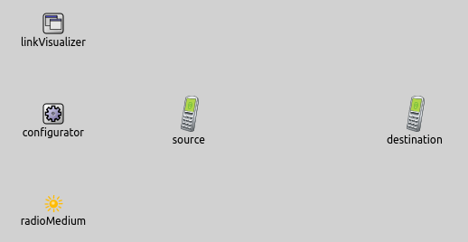
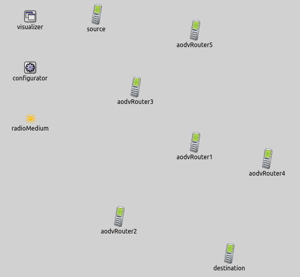

In computer networks, networked computing devices exchange data with each other over a physical link. The physical connection between nodes are established using either cable or wireless media. In wireless networks we don't see, whether it is possible to communicate through the radio medium. This link displayed by the PhysicalLinkVisualizer. Without this visualization we need to examine the console to find out whether the physical link is established between the nodes.
The example consists of 2 simulation models, each demonstrating different features of physical link visualization.
When a packet is received by a node flawlessly, a physical link is established between the transmitter and the receiver nodes.
The PhysicalLinkVisualizer keeps track of active physical links in a network.
A link becomes active between two nodes when a packet arrives at the receiver node's physical link layer from the source node's physical link layer.
By default links are not displayed, we can enable their visualization by switching the displayLinks parameter to true.
The links are represented visually by dotted arrows. The arrow's starting point is the sender node and its endpoint is the receiver node. The visualizer has filtering parameters, like nodeFilter, interfaceFilter and packetFilter. Using these we can specify which physical links are shown. By default all nodes, all interfaces and all packets are considered for displaying physical links. It is possible to use logical expressions as the filter's parameter, e.g packetFilter = "ping* or tcp*" shows the ping and the tcp physical links.
This configuration demonstrates how to enable the visualization of physical links.
We use this simple network for this configuration:

The network contains 2 Adhochosts. The network also has a PhysicalLinkVisualizer, an IPv4NetworkConfigurator and an Ieee80211ScalarRadioMedium module.
The source pings the destination.
This line of code enables the visualization:
The following animation depicts what happens, when we start the simulation:
When one node receives any packet flawlessly from the other node, a physical link is activated between the nodes. It's represented by an arrow, that starts from the transmitter node and points to the receiver node.
GOAL
NETWORK/CONFIG
RESULT
The goal of this configuration is displaying dynamically changing active physical links in a wireless environment. The physical links show, which nodes are able to communicate with each other directly. Here is the network for this configuration:

The network contains an IntegratedVisualizer, an IPv4NetworkConfigurator and an Ieee80211ScalarRadioMedium module. The topology consists of 7 AODVRouters, they move randomly between predefined borders. The nodes have two UDP applications: an UDPBasicApp and an UDPSink. The broadcast messages are sent by the UDPBasicApp and they are received by the UDPSink. We set the packets' name to Broadcast. We visualize only these messages.
Here is what happens, when we run the simulation:
RESULT
A Broadcast csomagok hatasara sok pontozott nyil jelenik meg a node-ok kozott.
A nyil afele mutat, aki tudta fogadni a packetet fizikai retegben.
Ahogy a node-ok mozognak a linkek eltunnek, ujak alakulnak.
This example only demonstrated the key features of phyisical link visualization. For more information, refer to the
PhysicalLinkVisualizer NED documentation.